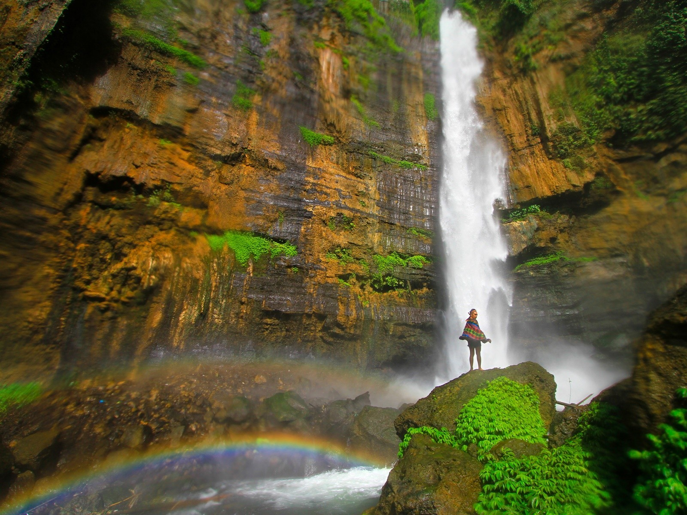
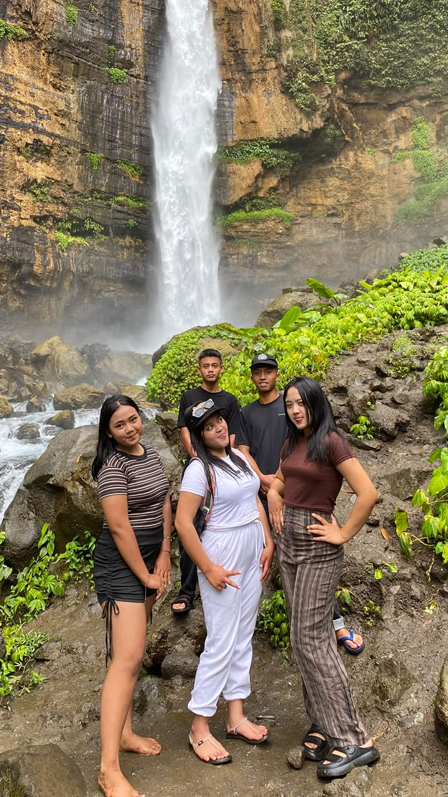
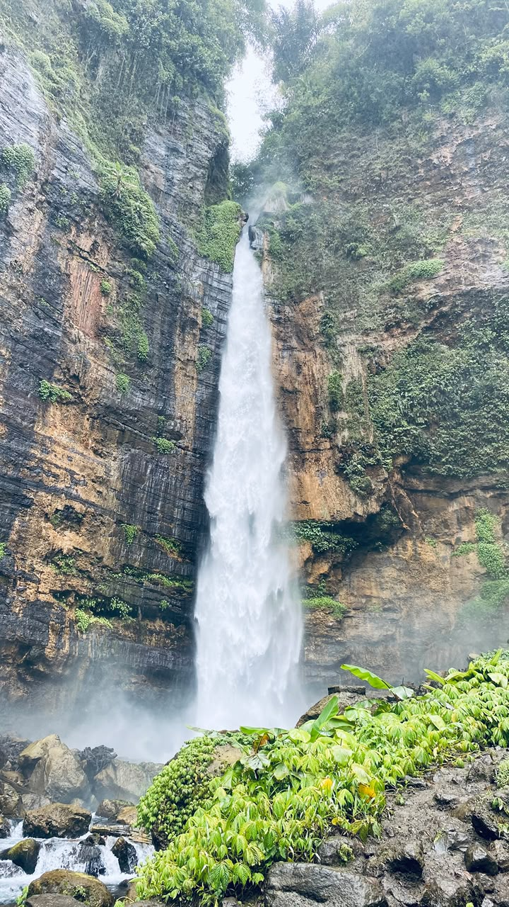
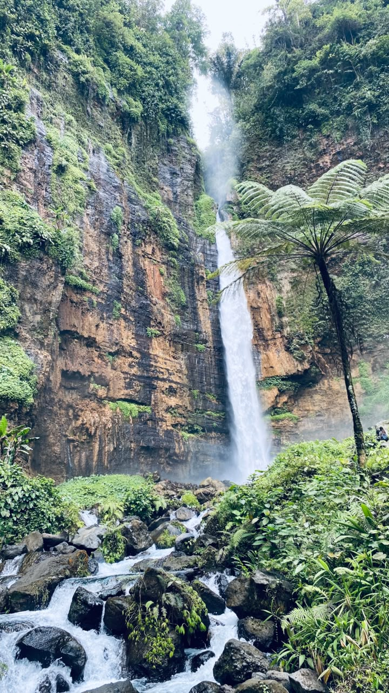
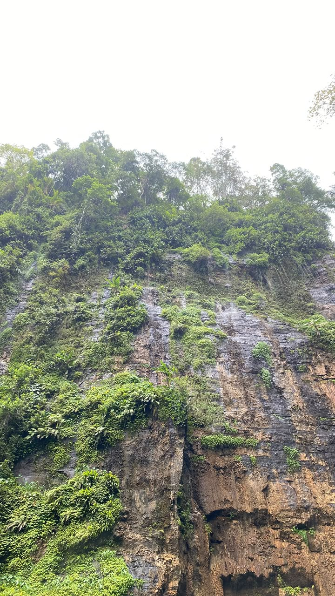
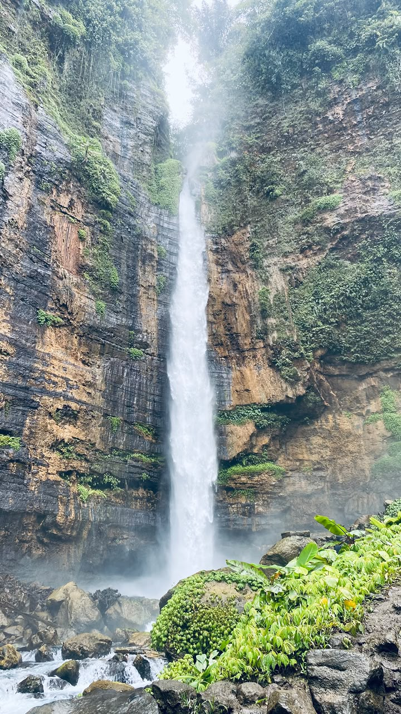
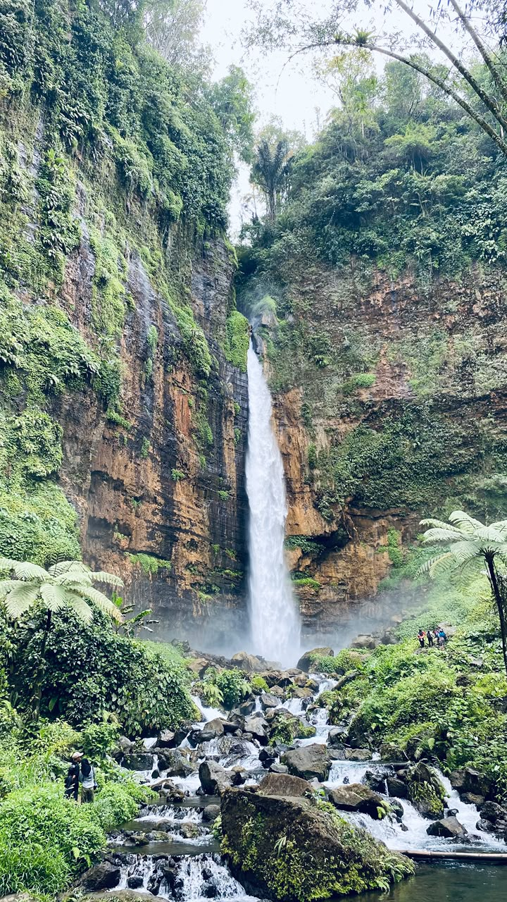
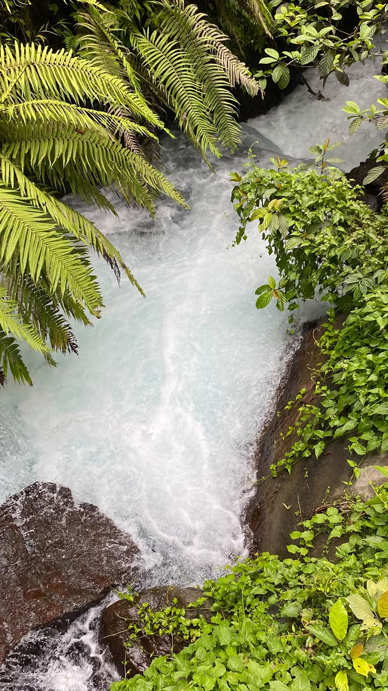
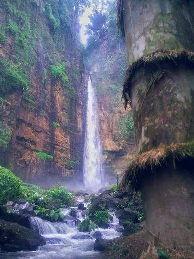

Mahakarya Alam
Air Terjun Kapas Biru
Menyajikan tirai air megah setinggi 100 meter yang jatuh diapit tebing purba merah ambar di kaki Gunung Semeru. Nikmati kesejukan udara murni, riam kabut menyerupai kapas lembut, dan panorama alam tersembunyi yang eksotis.

Tirai Air Megah Lembah Besuk Bang
Perpaduan buih air seputih kapas dengan dinding bebatuan eksotis dan rona kebiruan alami.
Foto Kelompok & Tim Projek
Dokumentasi resmi kelompok mahasiswa / siswa dalam rangka penyusunan projek media informasi dan eksplorasi destinasi wisata Air Terjun Kapas Biru untuk Bu Ratna.

Kelompok Riset & Dokumentasi
Website ini disusun dengan penuh dedikasi sebagai tugas projek informatif yang mengupas tuntas keindahan, sejarah, fasilitas, dan dokumentasi Air Terjun Kapas Biru di Pronojiwo, Lumajang.
Keterangan Tim:
Masing-masing anggota bertanggung jawab dalam riset sejarah, pengumpulan video sinematik, kurasi harga tiket & fasilitas, hingga tata kelola buku tamu pengunjung.
Daftar Anggota Kelompok
Luna Setyawati
Absen 20
Sari Tirta Hastuti
Absen 32
Emila Pratiwi
Absen 13
M. Mahrifatul Al Kautsar
Absen 21
Raditya Firmansyah
Absen 29
Sejarah & Asal-Usul Air Terjun Kapas Biru
Kisah di balik pesona air terjun megah di Pronojiwo, asal mula penamaan, serta keindahan geologis tebing purba yang menyelimutinya.
Mengapa Dinamakan "Kapas Biru"?
Nama "Kapas Biru" (Coban Kapas Biru) tidak lahir secara sembarangan, melainkan merujuk pada fenomena visual alami yang sangat menakjubkan saat air terjun ini dipandang dari berbagai sudut:
Buih Selembut "Kapas"
Debit air deras yang jatuh bebas dari tebing setinggi lebih dari 100 meter terpecah di udara menjadi jutaan percikan kabut halus yang tampak menggumpal putih bersih bagaikan hamparan kapas yang melayang.
Rona Gradasi "Biru"
Pantulan cahaya langit tropis dan kedalaman lubuk air di dasar tebing menghadirkan bias warna kebiru-biruan alami yang menawan, menciptakan kontras sempurna dengan tebing batu merah ambar di belakangnya.
Perpaduan gradasi warna inilah yang membuat masyarakat lokal menamainya Air Terjun Kapas Biru, melambangkan keanggunan, kemurnian air pegunungan, dan kedamaian alam Lumajang.
Sejarah Penemuan & Pengelolaan
Air terjun ini terletak di Dusun Mulyoharjo, Desa Pronojiwo, Kecamatan Pronojiwo, Lumajang. Dahulu, kawasan ini merupakan lembah tersembunyi yang hanya didatangi oleh petani dan pencari rumput lokal karena akses tebingnya yang curam dan rimbun.
Melihat potensi keajaiban alam yang luar biasa, pada rentang tahun 2015 hingga 2016, pemuda dan warga desa bergotong-royong membuka akses setapak, membangun anak tangga alami, dan mendirikan Kelompok Sadar Wisata (Pokdarwis). Sejak saat itu, Kapas Biru berkembang menjadi salah satu destinasi ekowisata favorit pelancong nusantara hingga mancanegara.

Tebing Purba Kaki Gunung Semeru
Struktur batuan vulkanik berlapis vegetasi lumut hijau basah yang memanjakan mata.
Garis Waktu Perkembangan
Lembah Alami & Sungai Besuk Bang
Kawasan alami yang asri di lereng selatan Semeru, belum terjamah wisatawan umum.
Gotong Royong & Pembukaan Jalur
Warga Dusun Mulyoharjo merintis jalur tracking tangga dan pos pengamanan pertama.
Ikon Ekowisata Bertaraf Internasional
Dikenal luas di kalangan fotografer alam dan pecinta petualangan dari seluruh penjuru dunia.
Video Sinematik Kapas Biru
Rasakan hembusan angin lembah dan gemuruh air terjun secara nyata. Video di bawah ini diputar secara otomatis (Autoplay & Loop terus menerus).
Harga Tiket Masuk, Parkir & Fasilitas
Rincian biaya resmi dan fasilitas lengkap yang tersedia bagi para pengunjung demi kenyamanan dan keselamatan saat berwisata.
Tiket Masuk Wisatawan
Berlaku untuk wisatawan domestik per orang.
- Akses masuk kawasan lembah air terjun
- Melewati tangga & pegangan pengaman
- Spot foto pemandangan bebas biaya
- Kontribusi pemeliharaan jalur ekowisata
Parkir Sepeda Motor
Retribusi penitipan kendaraan roda dua.
- Area parkir teduh dan tertata rapi
- Dijaga oleh petugas pengelola warga
- Keamanan helm dan perlengkapan
- Akses langsung ke titik awal rute trekking
Parkir Mobil
Retribusi penitipan kendaraan roda empat.
- Lahan parkir luas untuk mobil keluarga & minibus
- Petugas parkir siap membantu manuver
- Pengawasan area selama jam operasional
- Dekat dengan deretan warung dan toilet
Fasilitas Wisata yang Tersedia
Dirancang untuk menjamin kenyamanan setiap wisatawan di lokasi.
Lahan Parkir Luas
Mampu menampung puluhan motor dan mobil dengan pengawasan ketat.
Toilet & Kamar Bilas
Tersedia di pos atas dan jalur singgah dengan air pegunungan yang jernih.
Musholla Nyaman
Fasilitas ibadah lengkap dengan sajadah dan tempat wudhu bersih.
Warung Kuliner Lokal
Menyediakan kopi hangat khas Pronojiwo, mie instan, gorengan, dan kelapa muda.
Jalur Trekking Berpagar
Tangga semen dan pegangan besi pengaman untuk menuruni tebing dengan aman.
Gazebo & Pos Istirahat
Tempat duduk dan pendopo kayu untuk rehat sejenak selama perjalanan menuruni lembah.
Spot Foto Panorama
Dek observasi dengan latar langsung tebing merah dan kemegahan air terjun.
Pemandu Lokal (Guide)
Layanan pendamping trekking lokal berpengalaman untuk rombongan maupun individu.
Tips Penting Kunjungan
Gunakan sepatu atau sandal gunung anti-selip, bawa baju ganti, dan disarankan tiba sebelum pukul 11.00 WIB untuk pencahayaan terbaik.
Dokumentasi Keindahan Kapas Biru
Kumpulan potret autentik keindahan alam, rute perjalanan, kejernihan air, dan keunikan tebing di sekitar Coban Kapas Biru Lumajang.







Buku Tamu Pengunjung Kapas Biru
Tinggalkan pesan, kesan, ulasan, atau salam hangat Anda untuk pengelola dan kelompok projek. Konten informasi profil wisata telah terkunci dan terlindungi agar tidak dapat diubah oleh pihak luar.
Tulis Pesan & Kesan
Bagikan pengalaman Anda berkunjung atau sampaikan apresiasi Anda untuk projek Bu Ratna ini.
Daftar Jejak Pengunjung
Pesan dari para wisatawan dan penilai projek.